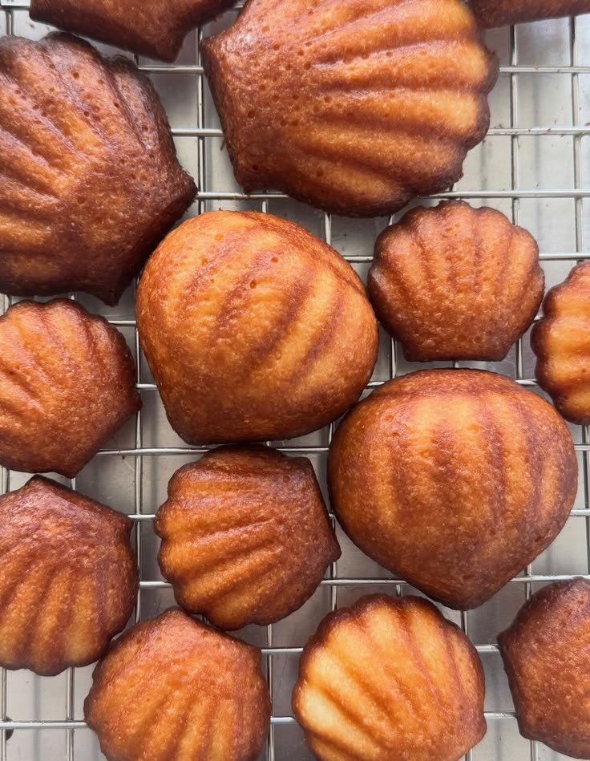
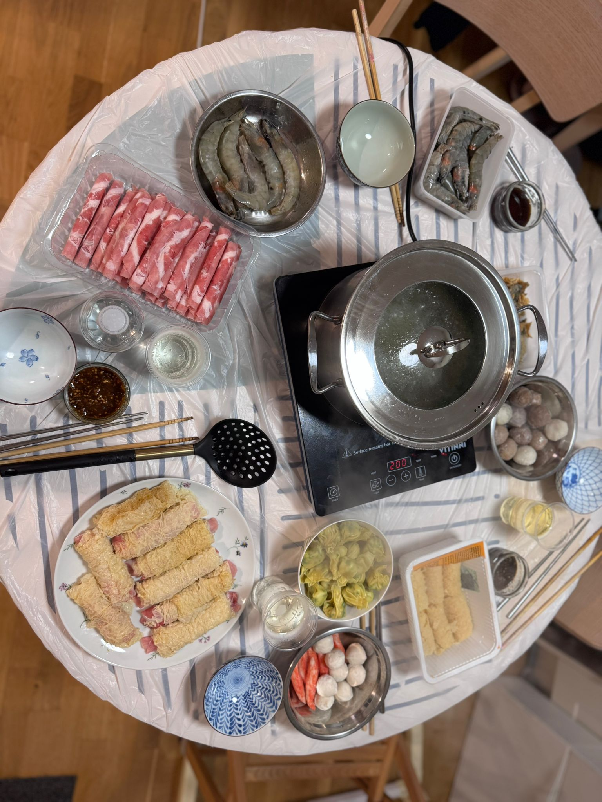
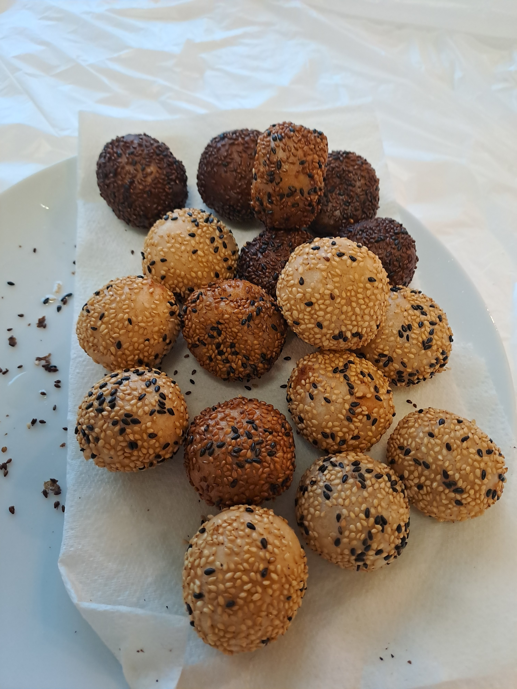
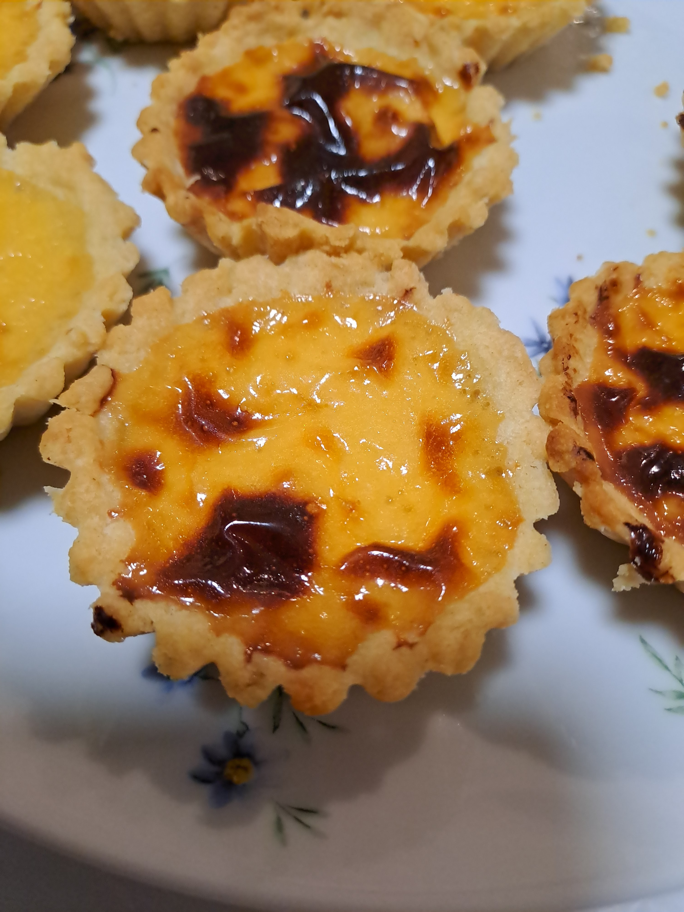

Introduction:
"Welcome to Comfort food blog !
I started this space because I believe that food is more than just fuel; it’s a way to connect, to heal, and to celebrate the simple joys of life. Here, you won't find tiny portions, complicated ingredients, or stressful techniques. Instead, you'll find a collection of recipes designed to feel like a giant hug. Whether you're looking for the ultimate Sunday night dinner, a nostalgic childhood dessert, or just a little bit of warmth on a tough day, you’ve found your place.
Siu mai

Siu mai is a classic Hong Kong street food staple that never fails to comfort. These iconic yellow-wrapped fish paste dumplings are steamed to perfection for 15 minutes, becoming wonderfully bouncy and tender. The real magic happens when they are drizzled with a rich, sweet soy sauce and a splash of smoky, spicy chilli oil, creating the ultimate sweet-and-savory bite
#HK #streetfood #nostalgic
Chapagetti with deep fried fish cake

Instant Chapagetti paired with golden, deep-fried Hong Kong-style fish cake. There is nothing better than diving into thick, springy ramen noodles coated in a glossy, savoury black bean sauce alongside a Sprite after a long night. The smoky, rich chajang flavour combined with the chewy, savoury crunch of the fried fish cake makes this my absolute favourite late-night wind-down meal.
#instant ramen #Chapagetti #HK style fish cake
Matcha Brownies

Nothing rounds out my comfort food series quite like a fresh batch of matcha white chocolate chip brownies. Pairing a warm, fudgy brownie with a steaming hot matcha latte creates the ultimate cozy afternoon escape.
These brownies excel in texture, featuring a crisp, paper-thin crust that snaps before revealing a dense, gooey center.
The sweet, velvety white chocolate chips perfectly cut through the earthy, robust notes of the green tea, balancing every single bite.
#matcha #brownines #cozy
butter tteok

Butter tteok is a viral baked dessert which is crispy, butter crust, soft, chewy, mochi-like center. It is quick and esay to make.
Butter tteok was a viral baked dessert which has crispy, caramelized edges that shatters slightly when you bite into it, inner has a chewy, bouncy,mochi-like center.
This dessert is easy to bake at homw, just mix and bake,yet it's naturally gluten-free and it perfectly pair with a hot bervenage or a scoop of ice-cream on top.
This dessert is my to go dessert when I crave something easy to bake.
#Korean dessert #baking # viral
Hotpot

Hotpot is a way to get people together. People put their food in a big pot of hot broth and eat it when it is done. This is perfect for when you have a friends over you can talk and laugh and have a nice meal together.
You can put anything in the pot. Like wontons or tofu or vegetables or meat or shrimp. While you wait for the food to cook people usually make their own special sauce to dip their food in. I like curry sauce and XO sauce it is made with dried shrimp and scallops. It tastes really good. It takes a work to make but it is worth it.
If you have not had hotpot before you should try it. All you need is a stove and a big pot and some broth and the food you like. Hotpot is not a meal it is something fun to do with your family and friends.
#Hotpot #HongKongCulture #Foodie #Gathering #ComfortFood
Sesame Ball

In my opinion, Sesame balls are the best thing to eat during Lunar New Year. They make people happy. Bring good luck. The outside of sesame balls is crunchy and chewy, like mochi. It is covered with white or black sesame seeds. Inside sesame balls it has a hollow center made from red bean paste or mung bean paste.
When sesame balls are freshly fried they are the best when they are warm. The outside is crunchy. The inside is soft and chewy which is just perfect. If you ever get to try sesame balls during Lunar New Year you should definitely try them.
#SesameBalls #LunarNewYear #HongKongCulture #TraditionalSnacks #AsianDesserts
Pineapple Bun
Pineapple Bun is a beloved traditional pastry from Hong Kong. Despite its name, it actually doesn’t contain any pineapple—the name comes from its golden, crackly top layer that looks like the texture of a pineapple.
The top is a sweet cookie-like crust that is crispy and slightly crumbly, while the bottom is a soft, fluffy milk bread with a pillowy texture. The contrast between the crunchy topping and the tender bread makes it a classic Hong Kong favorite.
The perfect way to enjoy a pineapple bun is with a cup of iced milk tea in the morning—a simple combination that brings back memories of Hong Kong bakeries, cafés, and everyday comfort.
#HongKongBakery #HKFood #TraditionalFood #NostalgicTaste #HongKongCulture
Egg Tarts

Egg tarts are really something in Hong Kong. They have two kinds of bases for egg tarts. You can get a base that's like a buttery cookie or one that is like flaky puff pastry. I personally think the puff pastry egg tarts are the best. Egg tarts are even more delicious when you have them with a cup of milk tea.
I have not been able to make egg tarts like the ones I had, in Hong Kong. The pastry is what is hard to get right. It has a lot of layers that are folded to make it light and flaky. The outside of the egg tarts is crispy and the inside is soft and creamy. This is what makes egg tarts so good.
The egg tarts with the cookie base are different. The base is sweet and soft. It goes really well with the egg custard inside.
#HKBake #HKStyle #HongKongFood #TraditionalBakery #HongKongCulture